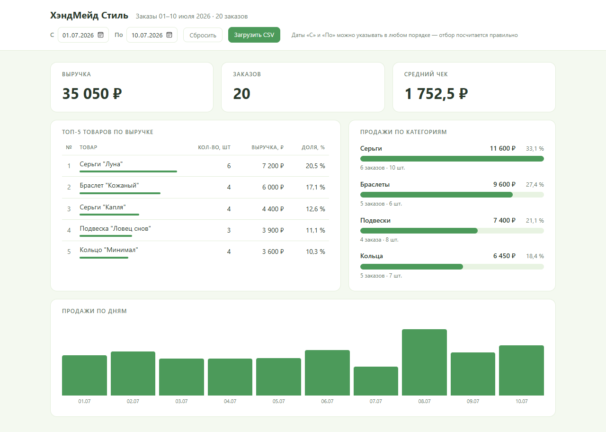
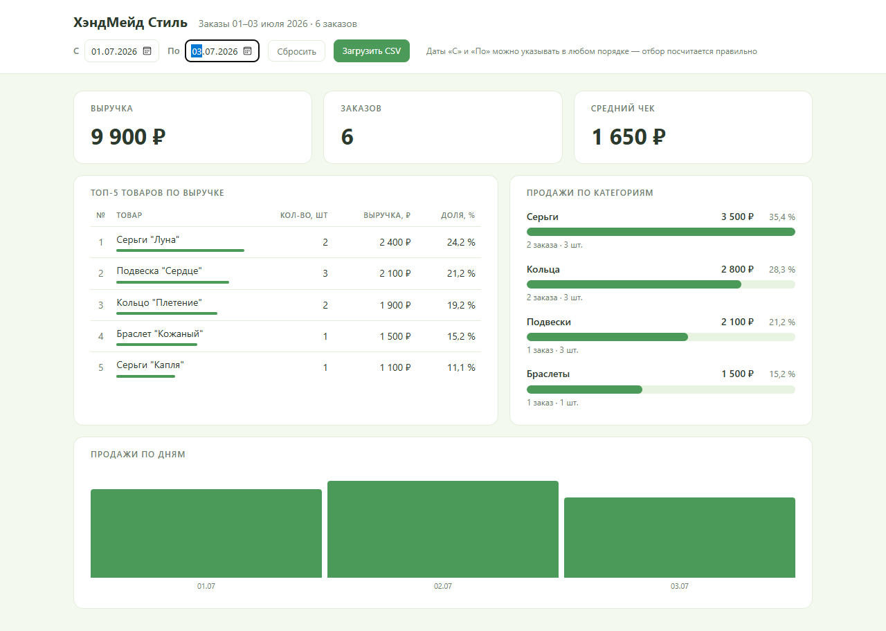
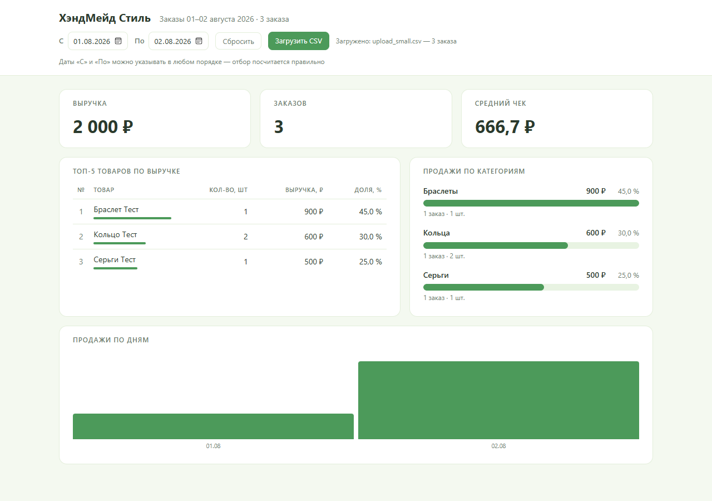

Кейс проекта
Статичный дашборд для интернет-магазина украшений ручной работы: выгрузка заказов в CSV — на экране выручка, топ товаров, категории и динамика по дням
Открыть проект на GitHub →Сделать понятный дашборд по заказам магазина: сколько заработали, каким товарам отдают предпочтение покупатели и есть ли заметный рост в динамике — без сложных BI-систем.
Владелец и менеджер небольшого магазина украшений ручной работы, который ведёт заказы в Excel и хочет быстро видеть итоги по продажам.
Данные есть только в таблицах: глазами посчитать итоги сложно, готовые BI-системы тяжёлые, платные и требуют подключения данных. Нужен простой отчёт, который открывается двойным щелчком.
Одностраничный статичный дашборд: читает выгрузку заказов в CSV и показывает четыре блока — ключевые показатели, топ-5 товаров, продажи по категориям и динамику по дням.
Выручка, число заказов и средний чек; топ-5 с долями; категории с полосами; график по дням; фильтр по диапазону дат; загрузка своего CSV кнопкой; понятные сообщения об ошибках данных.
HTML, CSS и чистый JavaScript без фреймворков и CDN; CSV-парсер и вся аналитика написаны вручную; Excel-шаблон для заполнения заказами; автотесты на Playwright; OpenCode для разработки.
Рабочий дашборд, сданный по техническому заданию: заказчик заполняет шаблон Excel, сохраняет CSV и видит все ответы на четыре вопроса о продажах за секунды. Работает офлайн, без сервера и установки; адаптирован под телефон. Автоприёмка — 24 из 24 проверок.



Хотите такой же результат для своей задачи?